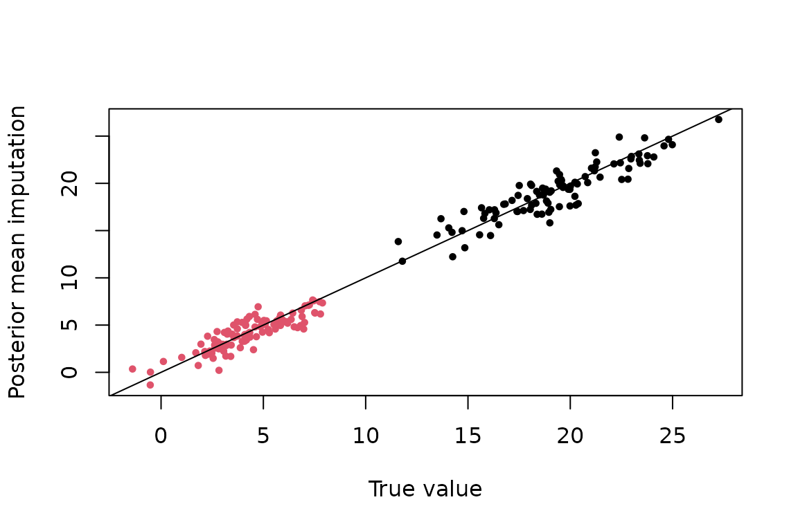

missBART fits selection models to multivariate responses whose missing values may be missing not at random (MNAR): whether a value is recorded can depend on the value itself. The responses follow a multivariate BART model. The missingness indicators follow either
- a multivariate probit regression on the covariates and the responses
(
missBART1()), or - a multivariate probit BART model on the covariates and the responses
(
missBART2()).
The missing responses are imputed while the model is fitted.
mvBART() fits the multivariate BART model on its own to
complete responses. The models are described in Goh, Soh, Parnell and
Murphy (2024), arXiv:2412.14946.
Simulated data
We simulate two correlated responses from five covariates, and then delete values with a probability that increases with the value itself.
set.seed(2024)
n <- 400
x <- matrix(runif(n * 5), ncol = 5)
f <- cbind(10 * sin(pi * x[, 1] * x[, 2]) + 20 * (x[, 3] - 0.5)^2 + 10 * x[, 4] + 5 * x[, 5],
5 * x[, 1] - 8 * x[, 2]^2 + 3 * x[, 3])
y_true <- f + matrix(rnorm(2 * n), ncol = 2) %*% chol(matrix(c(1, 0.6, 0.6, 1), 2))
y <- y_true
y[runif(n) < pnorm(-1 + 1.2 * scale(y_true[, 1])), 1] <- NA
y[runif(n) < pnorm(-1 + 1.2 * scale(y_true[, 2])), 2] <- NA
colMeans(is.na(y))
#> [1] 0.2375 0.2625The observed values are a biased sample: the missing values are larger on average than the observed ones.
missBART1: probit regression for the missingness
The chains here are short so that the vignette builds quickly; use the defaults, or longer chains, for real analyses.
fit1 <- missBART1(x, y, n_trees = 50, burn = 500, iters = 500, thin = 1,
mice_impute = FALSE, show_progress = FALSE)
fit1
#> missBART1 fit: 400 observations, 2 responses
#> Missing responses: 200 of 800 (25%)
#> Posterior samples: 500 (burn-in 500, thinning 1)
#> Tree acceptance rate: regression 0.064imputed_values() summarises the posterior of every
missing response, and completed_data() fills in their
posterior means.
imp1 <- imputed_values(fit1)
head(imp1)
#> row column mean sd lower upper
#> 1 1 Y1 16.87980 1.116259 14.65301 18.92342
#> 2 12 Y1 20.41151 1.201302 18.31049 22.90787
#> 3 23 Y1 22.26150 1.047592 20.32101 24.18174
#> 4 26 Y1 18.72594 1.056467 16.77357 20.83999
#> 5 35 Y1 21.33113 1.034022 19.36545 23.38867
#> 6 36 Y1 19.70692 1.323509 16.98855 22.24528
truth <- y_true[fit1$missing_index]
plot(truth, imp1$mean, xlab = "True value", ylab = "Posterior mean imputation",
col = factor(imp1$column), pch = 19, cex = 0.6)
abline(0, 1)
The probit coefficients describe the missingness mechanism. Each
column refers to the missingness of one response, and a positive
coefficient makes that response more likely to be observed.
Posterior intervals for the rows Y1 and Y2
that exclude zero indicate MNAR data. (With scale = TRUE
the coefficients refer to covariates and responses scaled to
[-0.5, 0.5].)
round(coef(fit1), 2)
#> , , mean
#>
#> Y1 Y2
#> Intercept 1.81 1.48
#> X1 0.59 -0.45
#> X2 -0.50 1.22
#> X3 0.49 -0.59
#> X4 0.35 0.26
#> X5 0.00 0.33
#> Y1 -5.51 -0.62
#> Y2 -1.55 -3.53
#>
#> , , lower
#>
#> Y1 Y2
#> Intercept 1.43 1.08
#> X1 -0.24 -1.39
#> X2 -1.70 -0.09
#> X3 -0.17 -1.25
#> X4 -0.48 -0.52
#> X5 -0.63 -0.28
#> Y1 -7.20 -1.93
#> Y2 -3.23 -6.08
#>
#> , , upper
#>
#> Y1 Y2
#> Intercept 2.24 1.97
#> X1 1.52 0.41
#> X2 0.69 2.76
#> X3 1.17 0.15
#> X4 1.19 1.17
#> X5 0.56 0.98
#> Y1 -3.90 0.61
#> Y2 0.16 -1.05missBART2: probit BART for the missingness
fit2 <- missBART2(x, y, n_reg_trees = 50, n_class_trees = 20, burn = 500, iters = 500,
thin = 1, mice_impute = FALSE, show_progress = FALSE)
fit2
#> missBART2 fit: 400 observations, 2 responses
#> Missing responses: 200 of 800 (25%)
#> Posterior samples: 500 (burn-in 500, thinning 1)
#> Tree acceptance rate: regression 0.065, missingness 0.131
#> Acceptance rate for missing responses: 0.2There are no coefficients to inspect here. Instead,
varimp() reports how often each predictor is used in the
splitting rules of the missingness trees. Splits concentrated on the
responses point towards MNAR data.
Comparison with ignoring the missingness
Fitting multivariate BART to the complete cases and predicting the incomplete rows ignores the reason the values are missing.
cc <- complete.cases(y)
fit0 <- mvBART(x[cc, ], y[cc, ], x_predict = x[!cc, ], n_trees = 50, burn = 500,
iters = 500, thin = 1, show_progress = FALSE)
pred0 <- matrix(NA, n, 2)
pred0[!cc, ] <- predict(fit0)
rmse <- function(a, b) sqrt(mean((a - b)^2))
c(complete_cases = rmse(pred0[fit1$missing_index], truth),
missBART1 = rmse(imp1$mean, truth),
missBART2 = rmse(imputed_values(fit2)$mean, truth))
#> complete_cases missBART1 missBART2
#> 1.491053 1.124269 1.188220What is in a fit
A fit is a list of posterior draws, one list element per kept
iteration; see ?missBART1 for all components. For example,
y_post holds the BART mean function, y_pred
posterior predictive draws, y_impute the imputed values
(ordered as which(is.na(y))), sigma_post the
residual covariance matrix and, if x_predict is supplied,
new_y_hat and new_y_post the mean function and
predictive draws for new covariates.